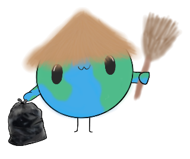

A little local action goes a long way.
Local preview · saved on this device only
Reports, photos, sign-ups, and chat stay in this browser. They are not published or shared with other volunteers.
- 1 Choose a location
- 2 Add the details
Where is the hotspot?
Search an address or choose a spot directly on the map.
⌖
Move the map, then click the exact spot you have in mind. On a touchscreen, tap a spot.
Address data © OpenStreetMap contributors.
Small actions. Real impact.A cleaner community starts here.
Find a cleanup, lend a hand, and meet the people making a difference.
Your search areaSet your city or choose a location.
Group chat local demo
Messages are saved on this browser only, not delivered to other people.